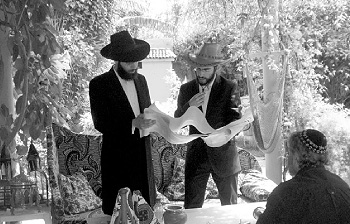

‘Every Place Where the Word of the King Reaches’

R’ Shneur Zalman Kupchik, shliach in New Delhi relates:
We recently opened a new Chabad house in southern Delhi. Most of the outreach work is done with children whose parents were sent from Eretz Yisroel by various government agencies and organizations such as embassies, the Jewish Agency, and the Education Ministry. Most of these children even when in Eretz Yisroel do not receive a traditional Jewish education and are completely estranged from Torah and mitzvos. They lack even basic knowledge of the holidays.
We have Lubavitcher girls working with us who teach our children and do programs with the local children. A drama played itself out at one of the houses that the girls visited. At this particular home, there was a grandmother visiting. When she received mishloach manos from the Chabad house, she said emotionally, “A few days ago, before I came here, I was walking with a friend in Rishon L’Tziyon. A large vehicle drove by us which was decorated in the Chabad style and playing lively Purim tunes. I was very excited to see it and began to cry. My friend did not understand why I was so moved by Purim music.
“I said to her, ‘In two days, I will be flying to see my grandchildren in India. When I see this Chabad vehicle I wonder how my grandchildren will know about Purim. Who is looking out for them in India?’
“I landed in India and when I arrived at my son’s house and did not see my grandchildren, my daughter-in-law told me they were at the Chabad house learning about Purim. Now, here you are with mishloach manos…”
BOOZE AND BAMBA
There are places where even drinking a l’chaim is a major hurdle. That’s the way it is in Pushkar, India. It is considered a “holy” city by the natives and one is forbidden to eat meat, fish and eggs. As for alcohol, don’t even mention it. This poses much more of a dilemma since these prohibitions don’t pertain to one religion or another but apply equally to all who live there.
However, if you thought that due to the illegality of drinking alcohol the simcha of Purim would be diminished, rest assured that the shliach, R’ Shimi Goldstein, demonstrated that every problem has a solution. The results? A Purim experience that is deeply branded into the awareness of the tourists who do not visit the Chabad house, those who are mekuravim, and even among the bachurim-shluchim who go to help out. All of them can divide their lives into “before Purim in Pushkar” and “after Purim in Pushkar.”
In the weeks leading up to Purim, the shluchim import Israeli candy and all sorts of nosh like Bamba, which the tourists haven’t seen in ages. The tourists work together to prepare mishloach manos which include a Moshiach card and a Purim brochure.
“Secret agents” go to the neighboring city where it is legal to buy vodka and load up the precious merchandise on a rickshaw, covered with blankets and other forms of camouflage. The silence of the rickshaw driver is bought and paid for and somebody else is assigned the job to “occupy” the guard at the Chabad house. Upon arriving at the Chabad house, the contents of the bottles are emptied into empty water bottles.
On Purim, right after the reading of the Megilla at the Chabad house, the Purim parade begins. Loudspeakers attached to a portable stereo playing Purim songs are mounted on a rickety rickshaw along with plenty of mishloach manos. Of course, the Goldstein children, dressed in costume, lead the way.
It’s interesting that the Indians celebrate a holiday with costumes and colors on that same day (l’havdil elef alfei havdalos). In the course of their celebration, they pour paint and water on one another and dance and make merry.
When the shluchim reach the center of the city with their pure simcha, nearly everybody joins in. The parade, which begins with those at the Chabad house, grows and grows with every guest house they pass. The shluchim walk into the guest houses with song and dance, pour a l’chaim (from the water bottles), enable people to give mishloach manos, read the Megilla for them, and invite them all to join the parade and the Purim seuda.
It is hard to describe the powerful feelings generated by this display of Jewish pride. Even those who up until that point were distant and even hostile are caught up in the joy of Purim. Every tourist gets excited by something else. Some are thrilled with the Israeli Bamba, some are drawn by the music and simcha. There are some who are struck by the awareness that all the religions are copied from our Torah and when it comes to simcha – there is no comparison between Jewish simcha and non-Jewish revelry.
In order to reach the guest house rooms on the third and fourth floors, you need to climb narrow staircases. In order to reach all the tourists and provide them with the full experience, some Indians are enlisted to bring the amplifiers and mishloach manos right up to those rooms.
One time, an Israeli who had formerly been in the exclusive Sayeret MaTKaL unit and had taken his first steps towards Jewish observance at the Chabad house, decided to do something daring. In front of all the cynics and apathetic people standing around he announced, “I am willing to climb to the fourth floor and jump from there into the pool on the first floor, if ten tourists agree to put on t’fillin.”
He ignored those who tried to dissuade him including the shliach. He gathered ten commitments from friends, some of whom had never put on t’fillin before, climbed to the top floor and jumped into the pool. Today, this bachur is learning in the Chabad yeshiva in Tzfas. He made his final decision to change his life during the Purim farbrengen at the Chabad house.
On Purim of two years ago, there was stepped up security at the Chabad house because of the large gathering of tourists and mainly because of what had happened in Bombay shortly before that. Consequently, it became that much more difficult to say l’chaim. Somehow, they managed to say l’chaim on “water” at the Purim seuda as the police stood guard outside. Then suddenly, in the middle of the seuda, as they were in a state of ad d’lo yada – not knowing the difference between bottles of water and bottles of vodka, a delegation of senior police officers walked in to ensure that all was in order.
R’ Goldstein, who was tipsy, experienced firsthand the play on words of the aphorism in Gemara, “harsh wine is tempered by fear.” The commander, who didn’t need to see the bottle in order to realize that alcohol was present, yelled at the shliach, “So much vodka and you couldn’t call me?”
Of course, the surprised R’ Shimi handed him a cup of vodka and the commander left the Chabad house happy and with gladness of heart and the city of Pushkar exulted and rejoiced.
WHY DID THE CHICKEN CELEBRATE PURIM?
R’ Menachem Mendel Arad relates:
On the first Purim that we were on shlichus in Marrakesh, Morocco, we decided to invite the entire community to a Purim party. We thought it would be easy to get people to come together and celebrate, but it turned out that it took effort to change people’s habitual way of doing things, i.e. Purim is celebrated at home with family. We were successful and many people, including those who are not connected with the k’hilla most of the year, showed up for the Purim seuda. Many of them developed a connection to the k’hilla and the Chabad house from that point on.
The k’hilla is not that big, just 50-60 families in all. We prepared mishloach manos for every family which thrilled them and got them involved in the atmosphere of Purim.
At the seuda, which was abundant in the best of Moroccan tradition, my son and I were dressed in Moroccan clothes and after l’chaim, we spoke about the need to be proud of being Jewish and to learn from Mordechai who did not bow to Haman. I remember that when I translated what I said into English, someone asked me to continue speaking in Hebrew so the non-Jews would not understand.
During the course of Purim night and the following day, we divided into teams. First, we invited everyone in the community to a Purim party and to hear the Megilla. When someone said he wasn’t sure he could make it, we promised to visit him and read the Megilla.
During the phone calls and the Megilla readings that we did, two interesting things happened. In one phone call, the wife of one of the community members answered the phone. She did not quite understand me and what I wanted. When I asked her whether she speaks English, she said she no, German. I began explaining to her in Yiddish that I wanted to invite her husband to a Purim party.
She said she understood what I wanted to say but her husband would not come. When I made inquiries about the couple, I found out something shocking. The Jewish Moroccan man was married to a German Moslem. I couldn’t get over the fact that intermarriage had infiltrated even among Moroccan Jewry.
That year, we went to the home of someone who is a descendant of many distinguished rabbanim. He had gone downhill spiritually to the point that he married a Christian with whom he had children. His non-Jewish wife died two days before Purim and he wanted her buried in the Jewish section of the cemetery. Of course the k’hilla refused and so he refused to attend the Purim party in the shul. He was angry at everyone.
In incredible hashgacha pratis, we went to his house, gave him mishloach manos, and read the Megilla for him. He was very moved to see how Lubavitcher Chassidim care about everyone without considering their actions and behavior, and his anger about Judaism and its adherents dissipated.
The following year, we made another round of phone calls and invited ourselves to the homes of people who were not planning on attending the Purim party. One of the people we called was a Jewish architect who had previously attended the Simchas Beis HaShoeiva and thoroughly enjoyed it. I told him (in English) that it was Purim, “la fête de Purim” (the Purim celebration in French). He said he was too busy to show up but he would be happy to have us come to him.
I took a taxi to his house together with one of the bachurim from Brunoy who came to help out. When we met, I related the Purim story and said we had come especially to read the Megilla for him and to give him mishloach manos. He got mad and shouted, “Today is Sunday, my day off. It’s the only time I have to spend with my son and you come here to talk to me about mitzvos? You know it doesn’t interest me!”
We were taken aback by this attack. I tried to explain that we had said from the outset why we were coming and he was happy about it and had welcomed us.
“You took advantage of the fact that I don’t speak English well and I didn’t understand you. I invited you because I thought you wanted to do business with me regarding ‘le poulet’ (chicken in French). If I had understood that you were talking about the Purim holiday, I would not have spoken to you.”
I didn’t know how to respond. When I saw that he had calmed down, I murmured an apology. He agreed to take us back to the shul in his car. He was annoyed the entire time and muttered to himself in French. To my surprise, the bachur who was with me did not give up. He addressed the man with utmost sincerity, saying, “Listen, the Lubavitcher Rebbe sent us especially to you to make you happy on Purim.” The architect got even more red in the face and said, “I don’t know who the Rebbe is and Purim and mitzvos don’t interest me. I am not religious and you know that!”
The bachur did not back down. “The Rebbe loves you; the Rebbe cares about you. It makes no difference whether you are religious or not. You are a Jew and that is why the Rebbe sent us especially for you.”
I could see the man relaxing and he agreed to forgive and forget, but the bachur still didn’t relent and asked him to put on t’fillin. The bachur’s pleasant manner finally got through. He put on t’fillin, accepted the mishloach manos and even fulfilled the mitzva of gifts to the poor.
Right before we left, the bachur said, “And now, the mitzva of Purim is to rejoice. Let’s dance.” I stood there astonished and waited to see what would happen.
The man ended up joining in the dance and he thanked and blessed us with a “Chag Purim Sameiach.” I could see how as much as a shliach knows the people and mentality of a place, it’s the t’mimus (sincerity) with the power of truth “without cheshbonos – calculations” that gets you where you want to go.
WHERE ART THOU?
R’ Zalman Deitsch, shliach to Perm, Russia, came up with a plan to duplicate the success he had the previous Purim, by sharing the fruits of his experience with Chabad houses around the world.
The previous year, he had wracked his brains to come up with a way of countering the lack of concentration on the part of children and even adults, during the long Megilla reading. About 600 Jews show up for the Megilla reading thanks to massive advertising in all the media, but the children become bored and start disturbing and making noise even when Haman’s name is not mentioned. Adults find it hard to be quiet for more than ten minutes even though they have Russian Megillas, since the Baal Koreh is reading in a language that is foreign to them.
The terrific idea that solved the problem entailed commissioning a Russian artist who draws in sand to depict the Megilla as it is read. As he works, it is not clear to the viewers what image or person he is drawing, but slowly, the form takes shape.
The preparations for the unique Megilla reading were tremendous. A huge hall that contained thousands of seats was rented. The media, both written and broadcast, advertised invitations to the Purim gathering and even the main local newspaper, which has a circulation of about 300,000, had an advertisement that rocked the city.
When the Baal Koreh began to read the Megilla, a Jewish artist who had studied the Megilla for three months prior to the event, began his work. He used an illuminated board and with sweeping movements of his fingers, he shaped scene after scene and figure after figure.
A videographer stood behind him and filmed everything he did on a closed circuit system that played on an enormous screen before the fascinated audience (aside from those who were able to follow in the Megilla and who could give free rein to their own inner artist).
Not surprisingly, this year most of the tickets for the Megilla reading followed by a Purim seuda were already sold a week before Purim.
PURIM EARLY BIRD SPECIAL
Speaking of gimmicks, here is another creative endeavor from Chabad on Campus of Portland which is directed by Rabbi and Mrs. Dov Bialo. The Bialos host Jewish students for Shabbos meals. They are the people to whom hundreds of students turn, in all sorts of situations. It could be a student who is hospitalized whom they look after or teaching Torah and Chassidus and conveying the message of Geula.
They don’t wait for students to come to them. They use gimmicks to draw the students in. Three weeks ago, with the advent of the month of Adar, they decided to use the idea of costumes in the spirit of “V’nahapoch Hu” throughout the month and to promote the idea of “time travel.”
Before Purim, they had a special evening in the course of which the students were “taken back” in a “time machine” to the Golden Age of Spain. Their apartment was decorated like a Spanish home of that period. The shluchim provided students with period costumes, prepared a festive meal with a Spanish flavor, and discussed that period and the attempts to (Heaven forbid) stamp out the observance of Torah and mitzvos through the most barbaric means.
With Pesach coming up, the shluchim are planning on taking students back to Ancient Egypt. R’ Bialo explains that Jewish history comes to life for the students with these programs.
G. I. JACK
The following story will be told with a pseudonym due to its sensitive nature.
Yanky, a bachur from a Chabad community in the US had dropped out of Jewish observance. He even went so far as to join the US army as a complete break with his past. Before enlisting, he changed his name to Jack and when he was asked what religion he belonged to, he said Catholic. He lived life with no indication that he was Jewish. Military training kept him busy.
Having completed his training, he was sent to go and fight in Afghanistan. One day, he was sitting in the mess hall with hundreds of gentile soldiers when the door opened and a priest walked in and asked, “Who knows what I am holding?” He held out a kosher Megillas Esther.
“There is a Jewish young man here and this was sent to him in one of the packages – can someone explain to him what this is?”
Jack said nothing. Although the priest was unsuccessful the first day, he decided to ask again the next day, thinking that maybe someone had been absent from the mess hall the day before. The next night, which was Purim, the priest said once again, “We were sent a package for one of the soldiers from the Aleph Institute. He is happy to receive the package and happy to know that Jews care about him but he simply does not know what to do with this,” and he held out the Megilla.
Jack couldn’t take it anymore. He got up and went over to the priest and introduced himself as a Jew belonging to the same movement that had sent the package. He explained the significance of the Megilla to the Jewish soldier who had received it in the package. He even read the Megilla for him with moist eyes.
That night, Jack had a hard time falling asleep. He felt that the Megilla was meant for him too and that despite the distance and estrangement on his part, the Rebbe did not forget him. Even in this place that was far away physically and spiritually, he was sent a Megilla along with a message: Reveal that which is hidden, liberate your G-dly soul.
The following day, he wrote a letter to his parents in which he described what had happened and asked their forgiveness and announced his decision to return to his family and a life of Torah and Mitzvos.
Tzfasman. "‘Every Place Where the Word of the King Reaches’." Beis Moshiach, no. 827 (March 14, 2012).